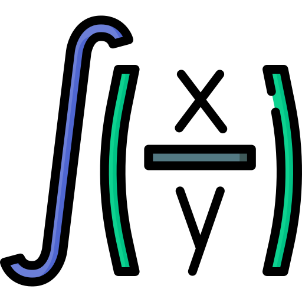

L'Institue Supérieur d'Informatique
L1CS03
Cours Analyse 2
Chapitre 2
Intégrales généralisées (ou impropres)
DÉfinition et premiers exemples
avec \(-\infin\); ≤ a < b ≤ \(+\infin\);
On appelle intégrale généralisée de f sur ]a, b] et on note \[I = \int_a^b{f(x) \; dx} = \lim\limits_{T \to a^{+}}{\int_T^b{f(x) \; dx}}\]
Si cette limite existe et est finie, on dit que \(I\) converge.
Rappel
soit \(f\): [a, b] ⟶ ℛ une fonction continue sur ]a, b]\(-\infin\) < a < b < \(+\infin\) \[\int_a^b{f(x) \; dx} = \left[F(x)\right]_a^b \\[4px] \qquad\qquad\qquad\quad= f(b) - f(a)\]
\(\int_a^b{f(x) \; dx}\) = La mesure de la surface finie bornée par:
(x = a\)
(x = b\)
\(𝒞_f\)
et
l'axe des abscisses
Exemples
Déterminer la nature des intégrales généralisées suivants
et on a :
\(I_1 = \lim\limits_{T \; \to \; +\infin } \int_1^T{\frac{dx}{1 + x^2}} \\[8px]\) \(\;\;\;\; = \lim\limits_{T \; \to \; +\infin }\left[arctg(x)\right]_1^T \\[8px]\) \(\;\;\;\; = \lim\limits_{T \; \to \; +\infin } arctg(T) - arctg(1) \\[8px]\) \(\;\;\;\; = \frac{\pi}{2} - \frac{\pi}{4} = \frac{\pi}{4}\) : fini donc \(I_1\) converge vers \(\frac{\pi}{4}\)
Donner l'allure de \(𝒞_f\) sur \([1, \;+\infin[\) où \(f(x) = \frac{1}{1 + x^2}\)
La mesure de la surface infinie bornée par \(x = 1\), \(𝒞_f\) et l'axe des abscisses est une mesure finie égale à \(\frac{\pi}{4}\)
et on a :
\(I_2 = \lim\limits_{T \; \to \; 1^+ } \int_1^2{\frac{dx}{x - 1}} \\[8px]\) \(\;\;\;\; = \lim\limits_{T \; \to \; 1^+ }\left[ln\,|x - 1|\right]_T^2 \\[8px]\) \(\;\;\;\; = \lim\limits_{T \; \to \; 1^+ } ln\,1 - ln\,|T - 1| \qquad or \; ln\,1 = 0 \\[8px]\) \(\;\;\;\; = \lim\limits_{T \; \to \; 1^+ } -\; ln\,|T - 1| \\[8px]\) \(\;\;\;\; = +\infin\) : Donc \(I_2\) Diverge
\[f(x) = \frac{1}{x - 1}\]
\(\int_1^2{\frac{dx}{x - 1}}\) : La mesure de la surface infinie bornée par:
\(x = 1\)
\(x = 2\)
\(𝒞_f\)
l'axe des abscisses
est une mesure infinie
Exercice
1) Déterminer la nature de \[I_1 = \int_1^{+\infin}{e^{-x} \; dx}\]
\(u ↦ \frac{1}{1 + x^2} \) est continue donc intégrable sur \([1, +\infin[\)et on a :
\(I_1 = \lim\limits_{T \; \to \; +\infin } \int_1^T{e^{-x}} \\[8px]\) \(\;\;\;\; = \lim\limits_{T \; \to \; +\infin }\left[-e^{-x}\right]_1^T \\[8px]\) \(\;\;\;\; = \lim\limits_{T \; \to \; +\infin } -e^{-T} + e^{-1} = e^{-1}\) : fini donc \(I_1\) converge
La théorème d'intégration par parties
Soient \(u, v : [a, \;b] ⟶ ℛ\) de classe \(C^1\) sur \([a, \;b] \\[6px]\)
Alors
\[ u(x) = \qquad ⟶\!\!\!\!\!\!\!{'} \quad\; u^{'}(x) = \qquad \\[4px] v^{'}(x) = \qquad ⟶\!\!\!\!\!\!\!\!\!\!\int \quad v(x) = \qquad \]
2) En déduire la nature de \[I_2 = \int_1^{+\infin}{x\,e^{-x} \; dx}\]
\(u ↦ x\;e^{-x} \) est continue donc intégrable sur \(]1, 2]\)et on a :
\[ u(x) = x \;\;\;\;⟶\!\!\!\!\!\!\!{'} \quad\; u^{'}(x) = 1 \qquad \\[4px] v^{'}(x) = e^{-x}⟶\!\!\!\!\!\!\!\!\!\!\int \quad v(x) = -e^{-x} \] \(I_2 = \lim\limits_{T \; \to \; + \infin } \int_1^T{x\;e^{-x} \; dx} \\[8px]\) \(\;\;\;\; = \lim\limits_{T \; \to \; + \infin }\left[x\;e^{-x}\right]_T^1 + \int_1^T{e^{-x} \; dx} \\[8px]\) \(\;\;\;\; = \lim\limits_{T \; \to \; + \infin } -Te^{-T} + e^{-1} + \int_1^T{e^{-x} \; dx} \\[2px]\) \(\qquad\qquad\qquad 0 \; ↵ \qquad\qquad\qquad⤹ \;e^{-1} \\[4px]\) \(\;\;\;\; = 2e^{-1} <\infin\) Donc \(I_2\) Converge
Exercice
\[ I_1 = \int_1^{+\infin}{\frac{dx}{x} \; dx} \]
\[ I_2 = \int_1^{+\infin}{\frac{dx}{\sqrt{x}} \; dx} \]
\[ I_3 = \int_1^{+\infin}{\frac{dx}{x^2} \; dx} \]
Exemple fondamental
Les intégrales de Rienann
Discuter suivant les valeurs de \(α ∈ ℛ\) la nature de
\[
I_{α} = \int_{a > 0}^{+ \infin}{\frac{dx}{x^{α}}}
\]